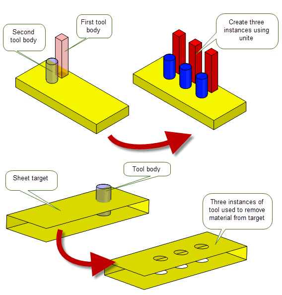
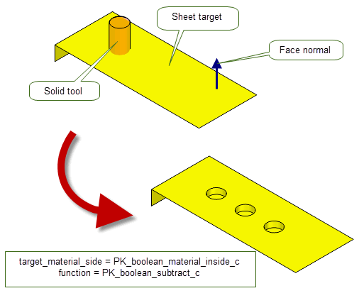
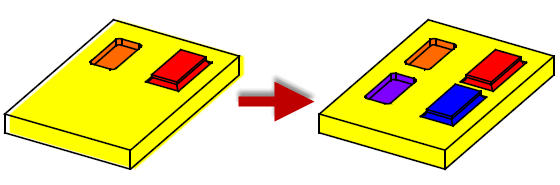
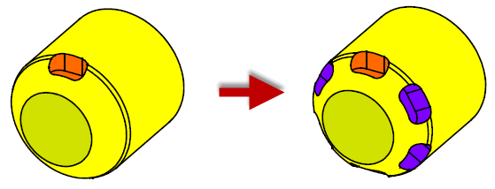

| |
Instancing And Patterning |
| <<< General Booleans | Chapters | Sectioning >>> |
This chapter explains how you combine a pattern of entities using instancing or patterning (or both) to produce the models you require.
Instancing and patterning are special cases of boolean operations; it is assumed that you are familiar with the behaviour and concepts of booleans as explained in Chapter 53, “Manifold Booleans”.
Instancing refers to the process of performing a number of boolean operations involving a number of (often) identical tool bodies, e.g. when drilling several holes into a plate. Because of the repetitive nature of each boolean -- only a single boolean function is used, and many of the
tools are identical -- using a dedicated instancing operation often provides better performance than using a series of boolean operations.
|
Note: This functionality offers partial support for facet geometry. |
Parasolid provides the following dedicated functions for performing instancing operations:
|
Create instances of a single tool on a single target body. The tool and target bodies must be solid. This function takes faces from a single target body, faces from a single tool body, and an array of transforms (either translations or rotations). Each transform determines the position of one instance that is the result of a boolean between the target body and a transformed copy of the given tool. When using boolean subtraction, the target body must not be fragmented by the operation, and no target face may be split. Note: If the conditions stated are not met by the supplied data, then PK_FACE_instance_tools may create an invalid body without returning an error status. |
|
|
Create instances of multiple tools on a single target body. None of the instanced tool bodies can intersect with each other. This function takes a list of faces from a single target body, an array of tool bodies, and a list of transform arrays (either translations, rotations, or scales). Each transform array determines the positions of the instances of the corresponding tool body that is used within the boolean. |
When the configuration of target and instances allows, these functions are able to perform the boolean operation more quickly by:
Both functions can take a range of options, many of which are available in both functions. The rest of this section describes the options that are available.
Figure 55-1 Creating instances on solid and sheet bodies using single and multiple tools
|
Note: PK_FACE_instance_bodies and PK_FACE_instance_tools do not support general bodies; the target and tool bodies used in these functions must be manifold. |
The following table provides a summary of the options available in both instancing functions provided by Parasolid. The Availability column indicates whether the option is available in only PK_FACE_instance_ tools, PK_FACE_instance_ bodies, or both functions. Many of the instancing options available are identical to existing boolean options. Where this is the case, the table below references the appropriate boolean documentation in Chapter 53, “Manifold Booleans”, for further information.
function |
The boolean operation to perform: unite, subtract, or intersect. Default: PK_boolean_unite_c. See Section 52.2, “The three basic boolean operations”, for more information. |
|
configuration |
Lets you improve the performance of the instancing operation in cases where you know the configuration of the target and tool meet certain criteria. Default: NULL. See Section 55.2.2, “Improving the performance of instancing operations”, for more information. |
|
select_region |
Identifies regions of the tool and/or target to be included or excluded in the boolean result. See Section 52.4.2, “Selecting regions in local booleans”, for more information. |
|
matched_region |
Whether to match regions in the target with regions in the tool. Default: NULL. See Section 52.4.5, “Matched topology in local and global boolean operations”, for more information. |
|
extend_face_list |
Whether to “overflow” instances onto adjacent faces (not passed to the instancing function) if the boolean imprinting phase results in incomplete loops. Default: PK_imprint_face_list_no_c. See Section 52.4.9, “Extending face lists during local booleans”, for more information. |
|
stop_self_intersection |
Whether to prevent self-intersections in the result. After imprinting, tool faces that survive the boolean are compared with all faces of the target body. Default: PK_LOGICAL_false. |
|
tracking |
Whether to return tracking information. Default: PK_LOGICAL_false. See Section 55.2.4, “Tracking information” for more information. |
|
merge_imprinted |
Whether to merge imprinted edges where possible. The behaviour of this option differs slightly between PK_FACE_instance_tools and PK_FACE_instance_bodies. For PK_FACE_instance_tools, see Section 52.4.13, “Imprint completion”, for more information. Default: PK_LOGICAL_false
For PK_FACE_instance_bodies, this option is a combination of the PK_FACE_instance_tools options
See Section 52.4.13, “Imprint completion”, for more information. |
|
selective_merge |
Whether to preserve mergeable edges that existed on the target before the instancing operation. Default: PK_LOGICAL_false. See Section 52.4.13, “Imprint completion”, for more information. |
|
allow_disjoint |
Whether to allow disjoint bodies in the result. Default: PK_LOGICAL_false. |
|
check_fa |
Whether to check faces involved in the instancing operation - only faces which are adjacent to imprinted edges are checked. Default: PK_boolean_check_fa_yes_c. |
|
repair_fa_fa |
Whether to check and repair face self-intersections. Default: PK_instance_repair_fa_fa_yes_c. If PK_instance_repair_fa_fa_yes_c, tool faces that survive the operation are compared against faces on the target and addition imprints and booleans performed if necessary. |
|
default_tol |
The default tolerance used by the instancing operation when creating entities or looking for coincidence between entities. Default: 1.0e-5. |
|
max_tol |
The maximum tolerance that may be applied to any entity involved in the instancing operation. Default: 0.0. |
|
merge_attributes |
Whether to merge attributes on faces that are combined. Default: PK_LOGICAL_false.
If See Section 96.4, “Events and how they affect attributes”, for more information about attribute events. |
|
keep_target_edges |
Specify the edge that survives when a target edge and tool edge coincide during an instancing operation. This can be one of:
If both faces adjacent to the tool edge survive, then the tool edge survives, regardless of the value of this option. If generalized topology is on, the target edge always survives. |
|
imprint_complete_targ imprint_complete_tool |
Whether to perform imprint completion on the target or tool, respectively. Default: PK_imprint_complete_no_c. See Section 52.4.13, “Imprint completion”, for more information. |
|
fence |
Fencing options for when performing trim or punch operations. Default: PK_boolean_fence_none_c. See Section 52.4.12, “Effect of the fence option on solid and sheet operations”, for more information. |
|
target_material_side tool_material_side |
Set material-side options for the target and tool respectively. Default: PK_boolean_material_default_c. See Section 55.2.3, “Specifying the body type of target and tool”, for more information. |
|
resulting_body_type |
The preferred type of the resulting body. Default: PK_boolean_prefer_original_c. See Section 52.4.17, “Specifying the body type of the result”, for more information. |
|
limit_target_faces |
Limit the faces that can be deleted to include only those within the boundary of the target faces specified. Default: PK_LOGICAL_false. See Section 52.4.14, “Specifying the body type of tool and target”, for more information. |
|
flag_no_effect |
Warn if the instancing operation would produce no effect on the body. This can be one of:
Default: PK_boolean_no_effect_basic_c. |
|
tracking_type |
Specify the amount of tracking information that is returned. Default: PK_boolean_track_type_basic_c (PK_FACE_instance_tools) or PK_instance_track_type_both_c (PK_FACE_instance_bodies). See Section 55.2.4, “Tracking information”, for more information. |
|
track_edges |
Specify the amount of edge tracking that is returned if tracking is requested via the tracking_type option. Default: PK_instance_track_edges_new_c. See Section 55.2.4, “Tracking information” for more information. |
|
update |
If your application uses models created using earlier versions of Parasolid, you can use the See Section 53.4, “Specialised boolean operations”, for more information. |
Note: Although the options are visible in the PK_FACE_boolean_o_t option structure, you cannot use the
resulting_body_type
,
tool_material_side
, or
target_material_side
options with PK_FACE_instance_tools. |
The performance of the instancing operation can be improved by using the instancing options in the
configuration
option sub-structure. If you know that the tools and target received by either PK_FACE_instance_bodies or PK_FACE_instance_tools conform to a certain configuration, then you can set the fields in this structure to match that configuration. Doing this turns off relevant checks within the instancing operation, resulting in a corresponding performance improvement. For example, if you know that none of your tool bodies intersect each other, you can set the appropriate field, and the instancing operation will not check whether the supplied tools intersect before creating instances.
The options available are as follows:
no_tool_intersect |
This option can be set when the set of tool bodies are known not to intersect each other, though they are allowed to clash with existing edges on the target (including the periphery edge). For optimal performance in PK_FACE_instance_bodies, this option should be PK_LOGICAL_true, and any tools supplied must not intersect with each other, or their implied transformed copies. |
Figure 55-2 Tool bodies that do not intersect each other but intersect edges on the target
no_loop_intersect |
This option can be set when there is no interference between any instances and the existing edges of the target, though, in the case of PK_FACE_instance_tools, the tools can clash with each other |
Figure 55-3 Tool bodies that have intersected each other but not the edges on the target
Figure 55-4 Identically positioned intersection loops on the instance tool body (cylinder) when it is united with an inclined planar face
one_in_all_in |
when one tool intersects a target face then all tool faces intersect that same target face. |
As with boolean operations, you can use the
target_material_side
and
tool_material_side
options in PK_FACE_instance_bodies_o_t to control how the tools and target specified are interpreted with regard to their body type. This is particularly useful, for instance, in the case of sheet bodies, since it allows you to treat a sheet body as if it was a solid, with material on a specific side of the sheet.
For instance, given suitable configurations of target and tool, you can use the material-side options to perform boolean punch and fence operations when creating instances. Figure 55-5 shows an example in which several instances are created on a sheet body using a punch operation and a solid tool body.

Figure 55-5 Punching blind holes in a sheet using
target_material_side
See Section 52.4.14, “Specifying the body type of tool and target”, for more information on the behaviour of the
target_material_side
and
tool_material_side
options, and the effects that can be achieved using them.
Note: Although the options are visible in the PK_FACE_boolean_o_t option structure, you cannot use the
tool_material_side
or
target_material_side
options with PK_FACE_instance_tools. |
Tracking behaviour is different for PK_FACE_instance_bodies and PK_FACE_instance_tools. In PK_FACE_instance_bodies, you can control the amount of tracking information that is returned. By contrast, PK_FACE_instance_tools just lets you turn tracking on or off.
In PK_FACE_instance_bodies, tracking is controlled using the following options:
tracking_type |
Controls the amount of tracking information that is returned. One of the following values:
For more information, see the documentation for PK_FACE_instance_bodies in the PK Interface Programming Reference Manual. |
track_edges |
Controls the amount of edge tracking that is returned in the
|
In PK_FACE_instance_tools, tracking is controlled using the
tracking
option. If this field is PK_LOGICAL_true, PK_FACE_instance_tools returns tracking information. This tracking information includes:
You can also control the level of information that is returned for imprint completion using the
tracking_type
option. Note that this does not provide the same behaviour as the
tracking_type
option in PK_FACE_instance_bodies: see the documentation for PK_boolean_track_type_t for details.
Patterning is very similar to the instancing operation, although it is not actually a boolean operation as it only operates on a single body.
|
Note: This functionality does not support facet geometry. |
The patterning function, PK_FACE_pattern_2, takes a set of faces that define a feature and an array of transforms. Each transform is to be applied to a copy of the faces that comprise the feature to create a new instance of the feature. In general, PK_FACE_pattern_2 assumes that the faces are transformed far enough apart that they do not clash. However, diagnostics are optionally available to help applications identify unexpected clashes between instances. These options are discussed further on in this section.
Figure 55-6 shows a simple patterning example. The feature given to PK_FACE_pattern_2 consists of the faces in both the pocket and the boss. There is only one transform applied and the result is shown on the right. Notice that this particular example could not be executed by a single boolean instancing operation, as that would imply an operation which would unite and subtract simultaneously.
Figure 55-6 Patterning example of one transform of both a pocket and a boss
There are restrictions on the kinds of feature that may be patterned; these restrictions are similar to those imposed for instancing. The patterning function is only able to copy the set of faces it is given and may only bring about a restricted set of topological changes. The patterning operation may split destination faces and edges on the target (underlying) body to enable successful completion. For a more detailed explanation of the restriction on changes of topology, please refer to the PK_FACE_pattern_2 documentation in the PK Interface Programming Reference Manual.
Figure 55-7 Patterning example that involves constant topology and geometry over the patterning operation
Apart from these restrictions, the form of the feature is relatively free: it may be disconnected, it may be closed or open (or a mixture of closed and open components), and it may be from a solid, sheet or general body. It may lie in one or more faces of the target body.
PK_FACE_pattern_2 contains the following options:
check_loops |
Ensures that the boundary loops of any new instance of the feature are contained within a face. See Section 55.3.1, “Ensuring new instances are contained within a face” for more information. |
check_fa_fa |
Ensures that the new instances of the feature do not clash with other faces in the body. See Section 55.3.2, “Ensuring new instances do not intersect other faces” for more information. |
same_face |
Improves performance when the new instances lie in the same faces as those of the original feature. See Section 55.3.4, “Improving performance when new instances lie in the same faces as the original feature” for more information. |
coi_face |
Asserts whether the boundary loops of the transformed feature are known to lie wholly within their respective destination faces. See Section 55.3.5, “General patterning” for more information. |
reblend |
Specifies whether blend faces in new instances should be recreated. See Section 55.3.6, “Recreating blends around patterned instances” for more information. |
n_face_maps face_maps |
Specifies the destination faces for each new instance, for cases where the boundary loops of the transformed feature are not known to lie within their respective destination faces. See Section 55.3.5, “General patterning” for more information.
This option should not be used unless
n_face_maps
to the same value as the number of transforms specified to PK_FACE_pattern_2. |
collision |
Whether to return errors that arise when instances collide with each other, or with features. See Section 55.3.3, “Returning errors when collisions occur”. |
tracking_type |
Whether to return tracking information for faces of the body that were present before the call to PK_FACE_pattern_2 and which are edited during the patterning operation. For example, neighbouring faces that are split when new instances are created. See Section 55.3.8, “Information returned by patterning”. Note: Tracking information for the faces of new pattern instances is always returned in the
patterns
field of the PK_FACE_pattern_2_r_t. See Section 55.3.8.1, “Tracking new pattern instances” for more information. |
The returned data from the patterning function contains:
By default,
check_loops
is set to PK_pattern_check_loops_no_c; this means that Parasolid creates new instances of a feature even if they do not fit into any of the faces in the target body. Depending on the configuration of the model, this could lead to undesirable results or invalidities.
If
check_loops
is PK_pattern_check_loops_yes_c, PK_FACE_pattern_2 performs a two-stage check. This check ensures that each boundary loop (i.e., those loops of the feature that lie on the target body) of each new instance of the feature is wholly contained within a face of the body.
Alternatively,
check_loops
may be set to PK_pattern_check_loops_outside_c. This tells PK_FACE_pattern_2 to perform the first stage of the checking (mentioned above) but not the second. Consequently, instances that would lie completely outside any face in the body are not created, but those that may intersect a bounding edge of a face are allowed to remain. If faces are not copied (or copied and subsequently deleted), the returned information indicates this.
Note: If
check_loops
is PK_pattern_check_loops_outside_c and you also set
coi_face
to PK_pattern_coi_face_unknown_c, then it is still possible for the boundary loop (when transformed by the input transform) to be outside any face in the target body, but the patterning operation may still succeed. See Section 55.3.5, “General patterning” for more information about the
coi_face
option. |
An example showing the differences between these three values of
check_loops
is given in
Figure 55-8. Note that the body returned using PK_pattern_check_loops_no_c is invalid; those returned by using PK_pattern_check_loops_yes_c and PK_pattern_check_loops_outside_c are valid, however.
Figure 55-8 The effect of the check_loops option
The
check_fa_fa
option intersects the faces of the new instances with existing faces of the body in order to detect any clashes that may have occurred.
Figure 55-9 illustrates how this might happen.
Unlike the case for
check_loops
, if
check_fa_fa
detects clashes between instances and existing faces they are not removed, so the result body will be invalid due to the clashing faces. The returned information contains the tags of the clashing faces, so you can easily identify the location of the problem.
Figure 55-9 The effect of the
check_fa_fa
option
PK_FACE_pattern_2 can detect when collisions occur, either between different instances in the resulting body, or between an instance and a pattern feature. You can use the
collision
option to choose whether or not to report these errors. By default, collision errors are not reported (PK_pattern_collision_no_c). Any collisions detected are not removed therefore the body will be invalid.
If this option is switched on, then you can find any collision errors in the relevant PK_pattern_status_t datatype for the colliding instance (found in
pattern_results.patterns.status
). In the case of a collision,
status
has the value PK_pattern_status_colliding_c.
You can use the
same_face
option to improve performance when all of the boundary loops of the new instances of the feature lie in the faces containing the original feature.
If
same_face
is PK_pattern_same_face_yes_c (the default), performance of the patterning operation is improved provided that the boundary loops of the new instances remain in the faces containing the feature. An example of this is shown in
Figure 55-10. Should they fall outside of these faces, the results depend on the value of
check_loops
: if set to PK_pattern_check_loops_yes_c, PK_FACE_pattern_2 returns a valid body with only those instances that lie in the same faces; if set to PK_pattern_check_loops_no_c, it returns an invalid body with all the requested instances. In such cases you should consider setting
same_face
to PK_pattern_same_face_no_c as described in Section 55.3.5, “General patterning”.
Figure 55-10 New instances lie in the same faces as the original feature
In general, the transformed versions of the feature may be altered during the patterning operation when creating new instances. These instances may or may not lie in the faces containing the original feature. Figure 55-11 illustrates a case where the transformed features must be altered in order to create instances that remain in contact with the destination faces (without passing through them).
If the transformed versions of the feature do not need to be altered before creating new instances, the boundary loops of the transformed features will be
coincident with their respective destination faces; that is, they will lie wholly within the destination faces. In such cases, the
coi_face
option should be set to PK_pattern_coi_face_yes_c for optimal performance. If any alterations must be made to a transformed feature before creating the corresponding instance, one or more of its boundary loops will not be coincident with their respective destination faces. Here, the
coi_face
option should be set to PK_pattern_coi_face_unknown_c.
Figure 55-11 Transformed boundary loops are not coincident with their destination faces
Depending on whether the new instances all lie in the faces containing the original feature, and also whether transformed boundary loops are coincident with destination faces, different combinations of options should be specified as described below.
In this case, you should set
same_face
to PK_pattern_same_face_yes_c. If the transformed boundary loops are known to be coincident with the destination faces, you should set
coi_face
to PK_pattern_coi_face_yes_c; this is the case for the model shown in
Figure 55-10. If not,
coi_face
should be PK_pattern_coi_face_unknown_c; this case is illustrated in
Figure 55-11. The
n_face_maps
option should be set to 0 and the
face_maps
array should be set to NULL.
In this case, you should set
same_face
to PK_pattern_same_face_no_c and
coi_face
to PK_pattern_coi_face_yes_c. An example of this is shown in
Figure 55-12. The
n_face_maps
option should be set to 0 and the
face_maps
array should be set to NULL.
Figure 55-12 New instances lie in different faces than the original feature and transformed boundary loops are coincident with their destination faces
In this case, you should set
same_face
to PK_pattern_same_face_no_c and
coi_face
to PK_pattern_coi_face_unknown_c. If the destination faces of each new instance of the feature are known beforehand, they should be specified using the
face_maps
array; this helps Parasolid maintain optimal performance. The
n_face_maps
option should be set to the number of transforms passed to PK_FACE_pattern_2 and each element of the
face_maps
array should contain the mapping information for one instance. The fields in each element of the
face_maps
array are as follows:
n_loops |
The number of boundary loops contained in the feature. (Default 0.) |
base_loops |
|
target_faces |
If the transformed boundary loops cross existing edges, however, or the destination faces are not known beforehand, you should set the
n_face_maps
option to 0, the
face_maps
array to NULL and
check_loops
to PK_pattern_check_loops_outside_c. Parasolid will then calculate the destination faces during the operation, at some additional cost to performance.
For the example given in
Figure 55-13,
n_face_maps
is set to 1 and the
face_maps
array consists of a single element containing the boundary loop and destination face shown in the diagram. The corresponding new instance is shown on the right-hand side.
Figure 55-13 The new instance lies in a different face than the original feature and the transformed boundary loop is not coincident with its destination face
For the example given in
Figure 55-14, the feature is a hollow cylinder through the solid, with boundary loops on two faces as shown in the diagram.
n_face_maps
is set to 2 and the
face_maps
array consists of two elements, each containing two boundary loops and two destination faces as shown. The corresponding new instances are shown on the right-hand side.
Figure 55-14 New instances lie in different faces than the original feature and transformed boundary loops are not coincident with their destination faces
For the sheet bodies shown in
Figure 55-15, the new instances of the feature cross the boundaries of existing faces; therefore you should set the
n_face_maps
option to 0, the
face_maps
to NULL and
check_loops
to PK_pattern_check_loops_outside_c. In
Figure 55-15 (a), the new feature straddles two adjacent faces; in
Figure 55-15 (b), it hangs off the end of an existing face. In both cases, the transformed boundary loops do not lie within a single destination face.
Figure 55-15 Examples of where new instances cross existing edges:
face_maps
should not be specified
The following table summarises the possibilities for general patterning:
|
New instances lie in the faces of the original feature and have coincident boundary loops. |
|
|
New instances lie in the faces of the original feature and have non-coincident boundary loops. |
|
|
New instances lie in different faces and have coincident boundary loops. |
|
|
New instances lie in different faces and have non-coincident boundary loops. |
|
If the boundary of the feature (to be copied) contains a face that has been blended, and the boundary loops of the transformed features may not be coincident with their respective destination faces (i.e.,
coi_face
is PK_pattern_coi_face_unknown_c), you should recreate the blends during the patterning operation. This is done using the
reblend
option.
reblend
is PK_pattern_reblend_no_c (the default), Parasolid does not attempt to recreate any blends when creating new instances. This may result in the failure of the operation if blend faces are present in the feature.
reblend
is PK_pattern_reblend_yes_c, Parasolid recreates the blend on any resulting patterned faces, as shown in
Figure 55-16.Figure 55-16 Recreating blends on features with non-coincident boundary loops
Patterning has the following effects when specified pattern faces have attributes attached to them, and when the pattern faces (or a subset of them) are members of a group.
Attributes attached to pattern faces are propagated to their corresponding result faces in the new instances, except in the following two cases:
Attributes of classes 4, 5 and 7, which transform with their owning entities, will be propagated and the patterning transform will be applied to the appropriate fields of the attributes of the result faces.
See Section 96.5, “Classes and the effect of modeling operations on attributes” for more information.
When specified pattern faces or non-pattern neighbouring faces are members of a group, the following behaviours occur:
See Chapter 99, “Groups” for more information.
PK_FACE_pattern_2 returns the status, tracking and diagnostic information via the following fields in its returns structure:
result |
|
n_patterns |
|
patterns |
An array of structures containing status, tracking and diagnostic information for each new pattern instance. See Section 55.3.8.1, “Tracking new pattern instances”, for more information. |
n_error_topols |
The number of topologies that caused a failure during the operation. |
error_topols |
The topologies that caused one or more failures during the operation. |
tracking |
If the Please refer to the PK_FACE_pattern_2_r_t documentation for a detailed explanation of the track records that may be returned. |
Note: When interpreting the returns from a call to PK_FACE_pattern_2, the calling application’s code should inspect the
result
field and the
patterns
and
error_topols
fields if they are not NULL. |
If the
result
field of the returns structure indicates success or partial success, tracking and diagnostic information for each resulting pattern instance is returned in the
patterns
array. The number of pattern instances will be the same as the number of transforms specified to PK_FACE_pattern_2.
The information returned for each resulting pattern instance is as follows:
Please refer to the PK_FACE_pattern_2 API documentation for a detailed explanation of the potential mappings between original and result faces in each pattern instance.
| <<< General Booleans | Chapters | Sectioning >>> |